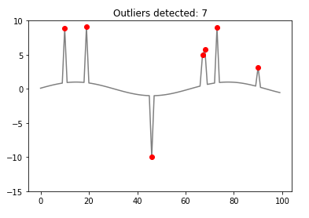

pycheron.psd.noise.findOutliers¶
-
hampel(data, nwin, ind)[source]¶ Python Version of the roll_hampel function in seismicRoll R package
Parameters: - data (numpy.ndarray) – input data
- nwin (int) – n integer window size
- ind (int) – index looping through
Returns: 1D array of values of the same length as data
Return type: numpy.ndarray
Example
-
hampelFilter(data, nwin, increment)[source]¶ Python version of roll_hampel_numeric_vector in seismicRoll R package. The Hampel filter is a robust outlier detector using Median Absolute Deviation (MAD); vector of values returned that can be tested against different threshold values. Higher values in return are associated with a higher likelihood that the associated point is an outlier when compared with it’s neighbors.
Parameters: - data (numpy.ndarray) – input data
- nwin (int) – n integer window size
- increment (int) – Increment integer shift to use when sliding the nwin to the next location
Returns: Returns a vector/array of same length of incoming data with NANs in the half-window at either end
Return type: numpy.ndarray
Warning
The default value of increment =1 should not be changed. Outliers are defined as individual points that stand apart from their neighbors. Applying the Hampel filter to every other point by using increment > 1 will invariably miss some of the outliers.
Example
-
findOutliers(data, nwin=41, threshold=10, selectivity=None, increment=1, fixedThreshold=True, fortran=False)[source]¶ Outlier detection with rolling hampel filter; A wrapper for the roll_hampel() function that counts outliers using either a user specified threshold value or a threshold value based on the statistics of the incoming data.
Parameters: - data (numpy.ndarray) – (vector/array) - input data
- nwin (int) – (int) - n integer window size
- threshold (int) – (int) minimum value for outlier detection.
- selectivity (float) – (float) - value between [0-1] used in determining outliers, or None if fixedThreshold = True.
- increment (int) – (int) - increment integer shift to use when sliding the nwin to the next location.
- fixedThreshold (bool) – (boolean) - True/False specifying whether outlier detection uses selectivity
- fortran (bool) – (boolean) - Use Fortran libs or not. If libs will not compile or on a Windows Machine, set to False
Returns: returns a list of indices associated with outliers in the incoming data
Return type: list
Note
The threshold and selectivity parameters work like squelch and volume on a CB radio: threshold sets a noise threshold below which you don’t want anything while selectivity increases the number of points defined as outliers. Of course nwin, the window Size, is important as well.
For B* and V* channels, the default value threshold = 6.0 seems to work well, while for L* channels a value of threshold = 12 seems more reasonable. More testing is needed.
Parameter Notes
- threshold (int)
- Threshold level is similar to a sigma value for normally distributed data. Hampel filter values above 6.0 indicate a data value that is extremely unlikely to be part of a normal distribution (~1/500 million) and therefore likely to be an outlier. By choosing a relatively large value for threshold min one can make it less likely that we will generate false positives. False positives can include high frequency environmental noise.
- selectivity (float)
- The selectivity is a value between 0 and 1 and is used to generate an appropriate threshold for outlier detection based on the statistics of the incoming data. A lower value for selectivity will result in more outliers while a value closer to 1.0 will result in fewer.
- increment (int)
- The default value of increment=1 should not be changed. Applying the Hampel filter to every other point by using increment > 1 will invariably miss some of the outliers.
Example
#import function from pycheron.psd.noise.findOutliers import findOutliers #Create sinusoidal signal with outliers g =[] for i in range(1,101): g.append(np.sin(0.1*i)) #Create indices with outliers to detect g=np.asarray(g) ginds = [10,19,46,67,68,73,90] for i in ginds: g[i] = g[i]*10 #Parameters nwin = 7 threshold = 6 selectivity = None increment = 1 fixedThreshold = True #finding outliers outliers = findOutliers(g,nwin,threshold,selectivity,increment,fixedThreshold)
Plotting
import matplotlib.pyplot as plt plt.plot(g,color='grey') plt.plot(outliers,g[outliers],'ro') plt.ylim(-15, 10) plt.title('Outliers detected: %s'%(len(outliers)))